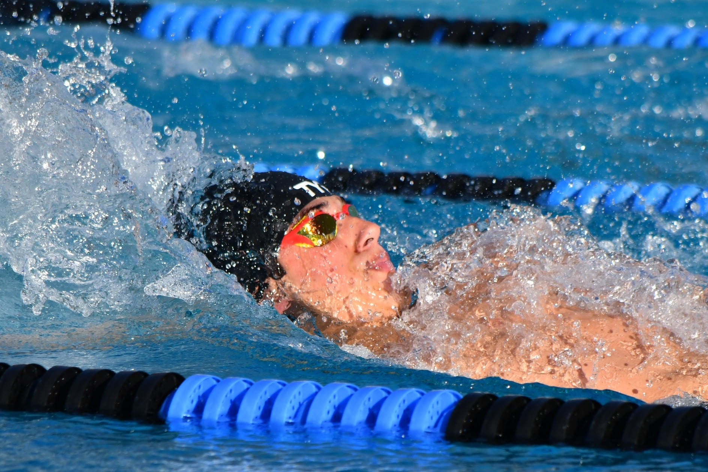

Your pace. Your goals.
Clouds Rest brings adult swimmers and aqua-fitness members together in a positive mountain-community program. Come to improve your health, build confidence, train toward a goal, or simply enjoy moving in the water.
You do not need to be the fastest swimmer - or even know every stroke. Start where you are. We will help you find the right pace and the right kind of movement.

Fitness
Build a steady routine and feel stronger in the water.
Technique
Get coaching and keep learning, one swim at a time.
Community
Share the pool with people who encourage your progress.